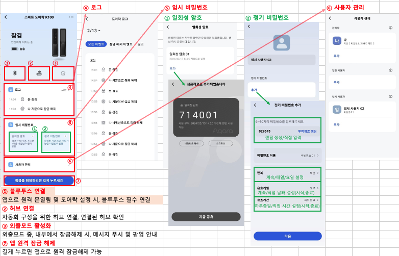

2 아카라홈 앱 관련 팁
2.1 자동화(자동 실행) 설정
2.1.1 자동 실행 새로 추가
- 하단 메뉴의 자동 실행 선택 >> 자동 실행 추가 버튼이나 우측 상단 ‘+’ 버튼 선택 >> 동작 실행을 위한 조건 입력
- 동작 조건 설정(예제는 열림 센서가 열림을 감지하면) >> 조건이 만족될 경우 실행할 동작 설정(예제는 경고 알림 울리기 설정)
- 설정된 자동화 저장

2.1.2 자동화 설정 예제
배선 없는 3로 스위치
- 필요 장치: 무선 스위치 + 조명 스위치
IF 조건 : 무선 스위치 한번 누르기
THEN 실행: 조명 스위치 켜고 끄기
항상 전원이 공급되는 스마트 조명
필요 장치: 조명 스위치 + 조명 또는 조명 드라이버 켜고 끄기
IF 조건: 조명 스위치 버튼 한 번 누르기
THEN 실행: 조명 및 조명 드라이버 켜고 끄기
노브로 색온도/밝기 조절하기
필요 장치: 노브 스위치
IF 조건: 노브 회전 (또는 누른채 회전)
THEN 실행: 밝기 조정(또는 색온도 조정)
재실 센서로 화장실 조명 켜고 끄기
필요 장치: 재실 센서(FP1 or FP2) + 조명 스위치
IF 조건: 사람 있음 / THEN 실행: 조명스위치 켜기
IF 조건: 사람 없음 / THEN 실행: 조명스위치 끄기
모션 센서로 화장실 조명 켜고 끄기
필요 장치: 모션 센서 + 조명 스위치
IF 조건: 움직임을 감지 / THEN 실행: 조명 스위치 켜기
IF 조건: ~이상 움직임이 감지되지 않음 / THEN 실행: 조명 스위치 끄기
일출 시간에 맞춰 커튼 열기
필요 장치: 스마트 커튼 컨트롤러
IF 조건: 해당 지역의 일출 시간(자동 시간 산정)
THEN 실행: 커튼 열기
월패드 연동기 없이 거실에서 스마트 도어락 K100 열어 주기
필요 장치: K100 + 미니 무선 스위치
IF 조건: 길게 누름 (or 짧게 누름 or 두번 연속 누름)
THEN 실행결과: K100 열기
자동화 관련 기타 사항
2.2 동시 실행 설정
2.2.1 동시 실행 새로 추가
동시 실행은 여러가지 동작을 한번에 순차적으로 실행하도록 설정하는 기능
하단 메뉴 동시 실행 선택 >> 동시에 실행할 동작 추가 (예제에서는 릴에이에 제어 값 할당)
- 동시에 시행할 동작 추가 >> 동시 실행 저장 >> 필요 시 실행
2.3 FAQ
질문 1: 아카라홈앱을 통해서 가족 공유하는 절차를 알려 주세요.
답변 1:
먼저 가족분의 경우도 아카라 홈앱의 계정을 먼저 생성하셔야 합니다.
그 다음 그 가족분의 계정에 공유를 하기 위해서 다음과 같은 절차를 따르시면 됩니다.
아카라홈 앱의 우측 하단의 [내 정보] >> [홈관리]>>[홈]에서 사용자 초대를 하신 후, 가족분 계정으로 로그인하신 후 [내 정보] >> [메시지 센터] >> [사용자 초대]를 승인하시면 됩니다.
질문 2: 아카라 홈앱에서 계정(이메일) 변경하는 방법을 알려 주세요.
답변 2:
계정 변경하는 방법은 다음과 같습니다.
준비 및 확인 사항
해당 방법은 현재 고객이 아카라홈 앱에 계정을 만들지 않았음을 전제로 한다.
계정 이동시 이미 가입된 계정으로 이동은 불가능하다.
계정 이동시 변경을 희망하는 계정의 이메일 로 문자코드가 전송되며 해당 코드를 입력해야 변경이 가능하다. → 직접 확인 할 수 있는 이메일인지 사전 확인 필수
계정 변경 가이드
- 아래와 같은 방법으로 아카라 홈앱 내에서 계정 변경 진행
질문 3; 기기 과거 동작(로그) 를 확인하는 방법을 알려 주세요.
답변 3:
앱의 맨 아래 메인 메뉴의 “장치” 선택 >> 로그를 보고 싶은 기기 선택 >> “장치로그” 항목 선택
질문 4: 자동 실행/동시 실행 과거 동작(로그) 확인하는 법을 알려 주세요.
답변 4:
앱의 맨 아래 메인 메뉴의 “내정보” 선택 >> 보고 싶은 동작(자동/동시) 선택 >> 원하는 로그 확인
질문 5: 스마트 도어락 K100에 관련된 아카라 홈앱 주요 기능들을 알려 주세요.
답변 5:

질문 6: 스마트 도어락 K100의 계정에는 무엇이 있는지요?
답변 6:
K100에는 마스터 계정, 일반 사용자 계정, 임시 사용자 계정이 있습니다.
질문 7: 아카라홈 앱에서 스마트 도어락 K100의 설정과 관련된 내용을 알려 주세요.
답변 7:
질문 8: K100 관련하여 자동화를 설정할 때, 조건으로 사용할 수 있는 내용이 많습니다. 좀 더 상세히 설명해 주십시오.
답변 8: